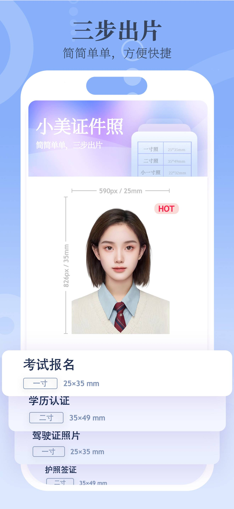
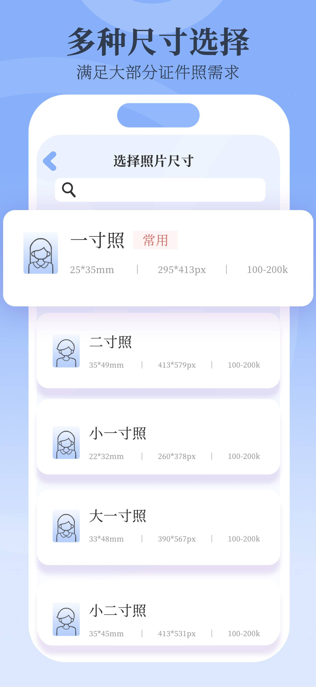
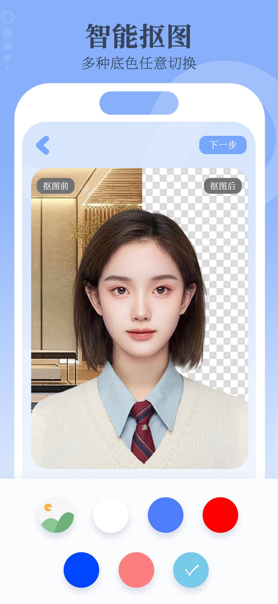
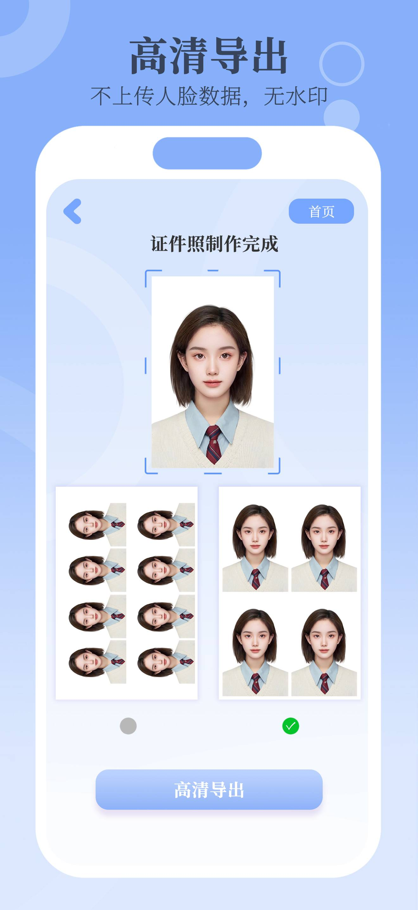
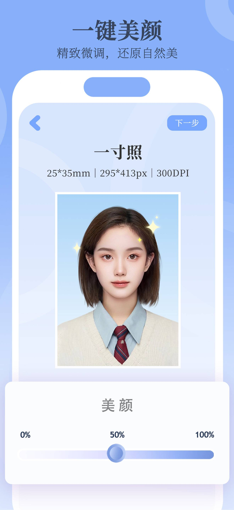

小美证件照 — iOS 与安卓上的免费证件照 App
小美证件照（Passport Photo Maker）是一款 iOS 和 Android 平台的免费证件照 App，三步即可制作合规的证件照。它内置全球各国标准尺寸与上百种中国证照规格，支持一键 AI 抠图换背景，看广告后可免费导出高清照片。


- 支持平台
- iOS（App Store）与 Android（Google Play）
- 价格
- 免费、含广告。看广告后免费导出高清。无订阅、无内购。
- 分类
- 摄影（Photography）
- 证照规格
- 全球各国标准尺寸 + 上百种中国证照规格 + 自定义尺寸
- 主要用途
- 护照、签证、学生证、简历，以及考研、公务员、会计等考试报名照
- App 内语言
- 英语、简体中文
小美证件照能做什么
小美证件照把手机里的照片变成可用于办证或考试报名的证件照。你先选尺寸，再拍照或上传照片，然后设置背景色；App 会用 AI 智能抠图去掉原背景，并导出高清图片。整个过程无需任何修图经验。
核心功能
- 上百种证件照规格：内置全球各国标准尺寸，以及一寸照、两寸照等常规尺寸；毕业照、学位照、入学照等学生类证照；会计、考研、计算机、公务员、医护、幼师、语言类考试等专业证照；并支持完全自定义尺寸。
- 一键 AI 抠图：自动抠掉原背景，并替换为标准背景色。
- AI 美颜：可选磨皮、亮眼、美白，强度可调。
- 高清导出：高分辨率导出，不压缩。
- 多联排版：把多张照片排在 6×4 英寸相纸上，便于在家或照相店打印。
使用流程
- 从各国尺寸与中国证照规格中选择，或输入自定义尺寸。
- 在 App 内拍照，或从相册上传一张照片。
- 选择背景色，智能抠图后导出完成的高清照片。
适合谁用
小美证件照面向不想跑照相馆、又需要证件照的人：办护照、签证的旅行者，需要学生证或简历照的学生，报名考研、公务员、会计、医护、幼师、语言类考试等需要证件照的考生，以及不愿为证件照付费的用户。免费使用。
价格
小美证件照免费、含广告。看广告后即可免费导出高清照片。没有订阅，也没有内购。
截图





常见问题
小美证件照是免费的吗？
是的。小美证件照可以免费使用，看广告后即可免费导出高清照片。没有订阅，也没有内购。
支持哪些证件照尺寸和规格？
内置全球各国的标准证件照尺寸，以及上百种中国证照规格，包括一寸照、两寸照等常规尺寸，毕业照、学位照、入学照等学生类证照，也可以输入完全自定义的尺寸。
支持考研、公务员、会计等专业考试的证件照吗？
支持。内置会计、考研、计算机、公务员、医护、幼师、语言类考试等各类专业证照规格。
能自动去除或更换照片背景吗？
可以。它用 AI 一键抠掉原背景，并可切换为标准背景色。
iPhone 和安卓都能用吗？
都能用。iOS 可在 App Store 下载，安卓可在 Google Play 下载。
拍好的照片能用来做什么？
可用于护照、签证、学生证、简历（CV）、毕业照，以及考研、公务员、会计等各类考试报名照片。
制作一张照片需要几步？
三步。选尺寸、拍照或上传照片、选背景色，智能抠图后一键导出即可。
有美颜或修图功能吗？
有。提供 AI 美颜，如磨皮、亮眼、美白，强度可以调整。
能把多张照片排在一张纸上打印吗？
可以。你可以把多张照片排在 6×4 英寸相纸上进行打印。